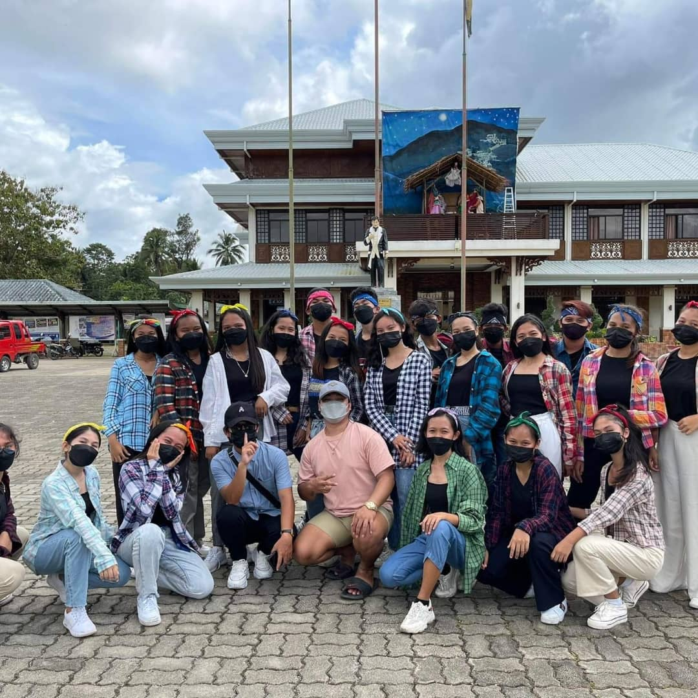
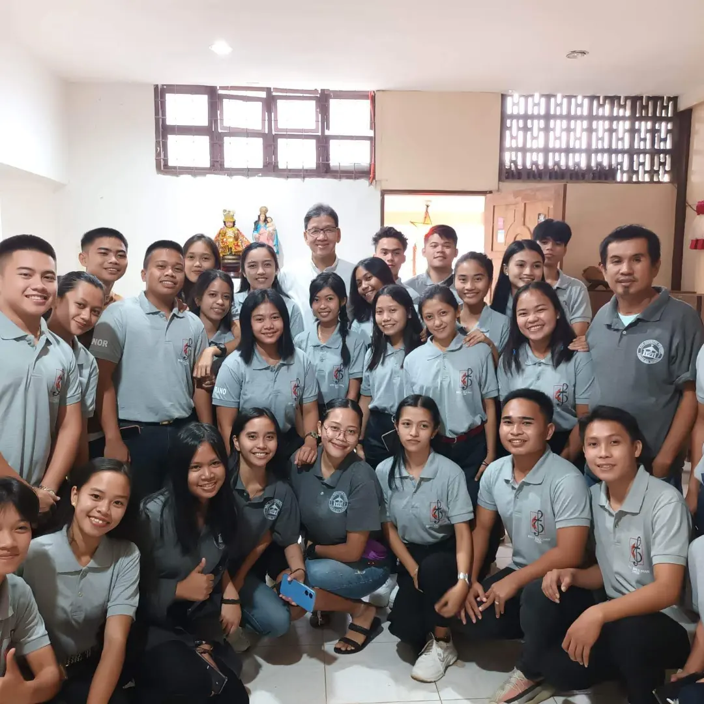

About Me
Explore
SELF INTRODUCTION
HELLO! PLEASE TO MEET YOU. 😊
I am Lovelyn Magsino, a 3rd year student of BISU-balilihan taking up Bachelor of Science in Information Technology. The only Daughter in the family, living in Catigbian, Bohol.
Name: Lovelyn Sagubay Magsino
Age: 21 years old
Birth Date: September 13, 2002
Nationality: Filipino
Religion: Roman Catholic
Languages: Visayan, Tagalog, English
Status:Single
Gender:Female
Address:Purok 3, Ambuan Catigbian Bohol
Mother's Maiden Name: Lolita Madig Sagubay
Father's Name: Cesario Lumaad Magsino
Siblings: Michael Magsino, Cesandre Magsino
EDUCATIONAL BACKGROUND
EDUCATIONAL ATTAINMENT
PRE-SCHOOL TO ELEMENTARY
AMBUAN ELEMENTARY SCHOOL
Ambuan, Catigbian, Bohol
School Year 2008-2015
HIGH SHOOL TO SENIOR HIGH
CATIGBIAN NATIONAL HIGH SCHOOL
Poblacion, Catigbian, Bohol
School Year 2015-2021
Senior High Strand: General Academic Strand
COLLEGE
BOHOL ISLAND STATE UNIVERSITY- BALILIHAN CAMPUS
Magsija, Balilihan, Bohol
School Year 2021-present
Program/Course: Bachelor of Science in Informayion Technology
ACADEMIC AWARDS
ACADEMIC AWARDS
Elementary Awards
Service Award
Consistent With Honor 2008-2015
Best in Spelling
Best in Math
Girl Scout Awardee
Athlete of the Year 2012-2015
High School and Senior High School Awards
Consistent With High Honor 2015-2021
Drum and Lyre Awardee
1st place in Math Sayaw
1st place in Spoken Poetry
2nd place in singing competition
Choir Awardee
INTEREST AND HOBBIES
THINGS I LOVE TO DO
SINGING WITH THE CHOIR AND SINGING ALONE
My Childhood talent. Enjoying its beat and rhyme make the people jam.
LISTENING TO MUSIC
Music heals, give peace, calm a mind, and give relaxation .
DANCING
Dance when I'm at my mood of Dancing.
PLAYING VOLLEYBALL
My childhood sports. My way of exercising and our bonding time with my friends.
READING BOOK NOVEL
My way of escaping the reality. Keeping inspired by other story.
WATCHING MOVIES WITH DIFFERENT GENRE
Realizing and learning the different approach, culture, behavior, tradition of different people/country.
LOVE TRAVELLING
Getting to new places, new atmosphere, and new horizon make me in love the nature.
FAVORITE NOVELS

THE NIGHTINGALE
The Nightingale by Kristin Hannah is a novel that tells the story of two sisters in Nazi occupied France during World War II. It shows their bravery, sacrifices, and resilience while they fight to survive and resist the enemy.
"In love we find out who we want to be, In war we find out who we are"
Read more about The Nightingale
A WALK TO REMEMBER
What is A Walk to Remember novel about? A Walk to Remember is a novel by American writer Nicholas Sparks, released in October 1999. The novel, set in 1958–1959 in Beaufort, North Carolina, is the story of an only son of a wealthy family that finds true love with the most unexpected person. The daughter of a minister (Mandy Moore) meets the only son (Shane West) and the story takes us through hard times, love and bitter sweet passion.
Read more about A Walk to Remember
THE HUNGER GAMES
The Hunger Games is the first novel in author Suzanne Collins' The Hunger Games trilogy. Set in a post-apocalyptic, dystopian North America known as Panem, the story gets its name from its annual gladiatorial contest known as the Hunger Games.
The Games begin with a Reaping in which one boy and one girl (both of whom must be between the ages of twelve and eighteen) are chosen from each of Panem's districts. The children usually have their names selected at random, although they can volunteer. Selected tributes are whisked to the Capitol, where they have a brief training period before being forced to fight each other to the death. The Games are televised across the districts, and all citizens must watch; wealthy investors from the Capitol may "sponsor," or send gifts to, certain tributes. The last child to survive is the victor and their entire family is rewarded with a house in a wealthy part of their district known as the Victor's Village. However, the victors must later act as mentors toward tributes from their district in future Games.
The first novel follows the main character, Katniss Everdeen, as she struggles to survive the titular Games. The second novel, Catching Fire, follows Katniss as she is dragged back into the Games' arena amid a rebellion she unintentionally sparked, while the trilogy's conclusion, Mockingjay, chronicles a war to end the Capitol's regime of terror.
Read more about The Hunger GamesDREAM DESTINATION

THE CITY OF LOVE
Paris, France
 >
>
CORON ISLAND
Coron, Palawan Philippine
THE CITY OF ROME
Rome, Italy

ICELAND
Northern Europe

DISNEYLAND
Paris

MOUNT FUJI
Japan

SYDNEY OPERA HOUSE
Sydney
ACTIVE ORGANIZATION
PARISH YOUTH MINISTRY (PYM) - Immaculate Conception Parish - Catigbian, Bohol
BISU BALILIHAN CAMPUS CHOIR - BISU Balilihan - Magsija, Balilihan
Projects
1. AsyncStorage
AsyncStorage Example
2. Mobile Development Components
React-native mobile development components
3. Object Mapping
Mapping object using flatlist
Contact Me
- lovelynmagsino9@gmail.com
- 910-8693-187
- Lovelyn Magsino
- Intagram.com/lovelyn6107/
- Lovelyn Magsino
- lovelynMagsino